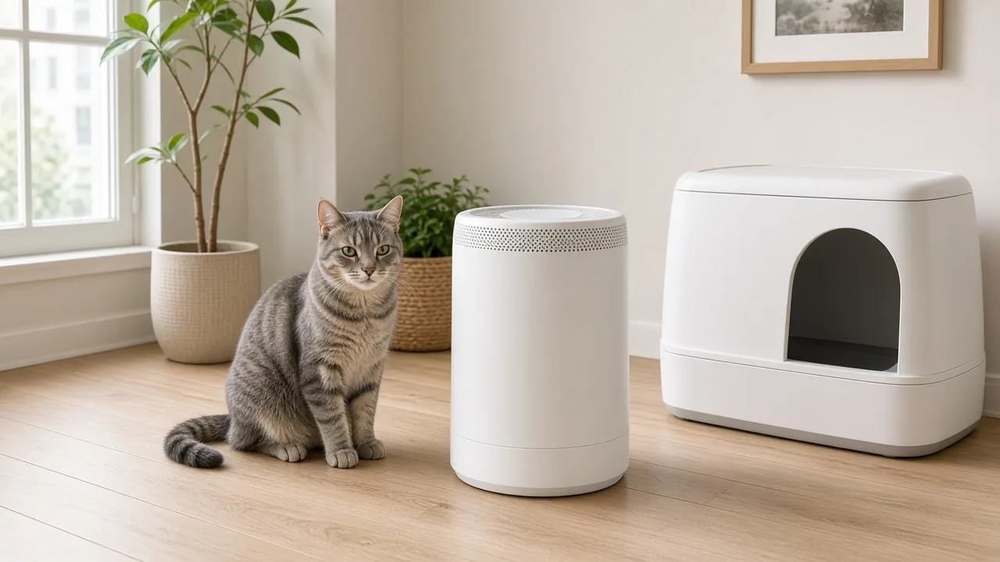
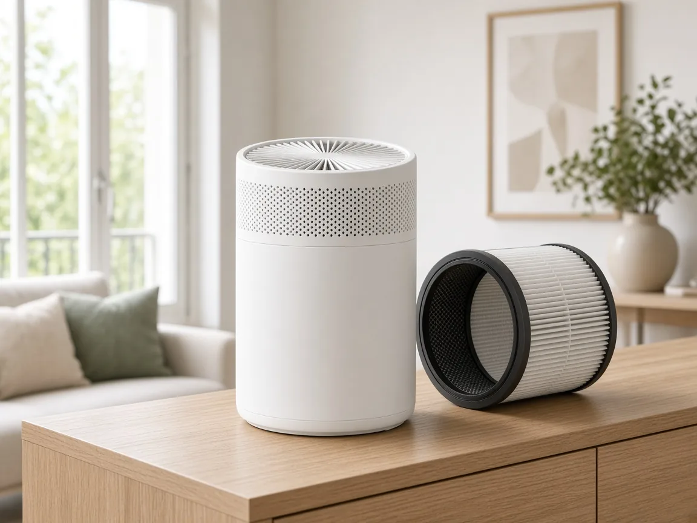
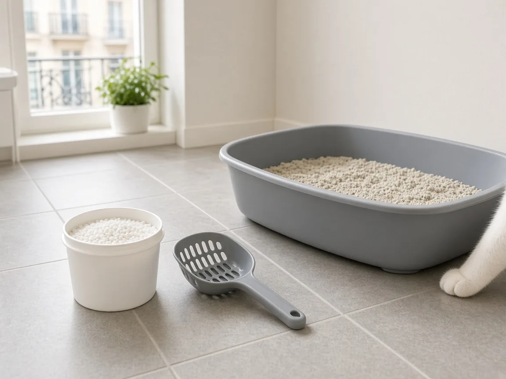
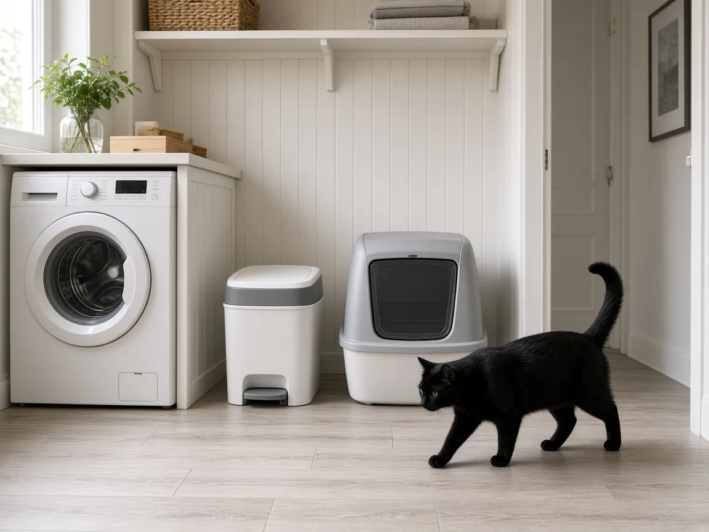

Purificateur d’air pour odeur de litière : lequel choisir en appartement ?

Dans un petit appartement, l’odeur de la litière se remarque vite, surtout quand le bac est dans la salle de bain, l’entrée ou un coin du salon. Avant de multiplier les sprays, il y a trois aides vraiment utiles : un purificateur d’air avec filtre charbon, un désodorisant sans parfum pour le bac et une poubelle à litière hermétique. Voici comment les choisir et les combiner, sans brusquer ton chat.
D’abord, la base : l’entretien du bac
Aucun appareil ne compensera un bac mal entretenu. Retire les selles et les agglomérats chaque jour, change complètement la litière à intervalles réguliers et lave le bac à l’eau chaude avec un savon doux non parfumé. Une litière agglomérante de bonne qualité et un bac assez grand font déjà une grande différence. Si ton chat a souvent une odeur d’urine inhabituellement forte, ou fait en dehors du bac, parles-en à ton vétérinaire.
Comment choisir un purificateur d’air contre l’odeur de litière
- Le filtre charbon actif : c’est lui qui capte les odeurs. Vérifie que le filtre en contient une vraie couche, pas un simple voile.
- Le filtre HEPA : il retient poussière de litière, poils et squames. Un préfiltre lavable prolonge sa durée de vie avec un chat.
- La surface couverte : choisis un modèle prévu pour la taille de la pièce où se trouve le bac, voire un peu plus.
- Le niveau sonore : un mode nuit discret évite de déranger ton chat près de son bac, et toi le soir.
- Le prix des filtres : regarde le coût et la fréquence de remplacement des filtres, c’est le vrai budget sur la durée.
- Pas d’ionisation ni d’ozone : préfère une filtration mécanique simple, sans fonction qui produit de l’ozone.
1. Le purificateur d’air HEPA avec filtre charbon

Le plus efficace sur l’air de la pièce
Un purificateur compact à filtre combiné HEPA et charbon actif fait circuler l’air de la pièce et retient une partie des odeurs, des poussières de litière et des poils. C’est l’allié idéal quand le bac est dans une petite pièce peu aérée ou un studio. Pose-le à distance du bac, laisse-le tourner en vitesse basse en continu et passe en vitesse plus forte juste après le nettoyage de la litière. Pense à aspirer ou laver le préfiltre régulièrement, les poils de chat l’encrassent vite.
Voir sur Amazon : purificateurs HEPA + charbon2. Le désodorisant sans parfum pour litière

Le plus simple à ajouter dans le bac
Les granulés ou poudres à base de bicarbonate ou de charbon s’ajoutent à la litière pour neutraliser une partie des odeurs entre deux changements. Choisis un produit sans parfum : un bac qui sent fort le parfum peut gêner ton chat et le pousser à faire ailleurs. Mets-en une petite quantité, mélangée à la litière, et observe si ton chat l’utilise toujours normalement. C’est la solution la moins chère, à combiner avec un bon entretien.
Voir sur Amazon : désodorisants sans parfum3. La poubelle à litière hermétique

La meilleure pour ne plus sortir la poubelle chaque jour
Quand tu ramasses les selles chaque jour, le sac de la poubelle de cuisine finit souvent par sentir. Une poubelle à litière hermétique enferme les déchets dans un sac qui se referme à chaque usage, à garder juste à côté du bac. Tu ramasses, tu jettes, tu refermes, et tu ne vides la poubelle qu’au bout de plusieurs jours. Vérifie le prix et la disponibilité des recharges de sacs, et prends un modèle à pédale pour garder les mains libres.
Voir sur Amazon : poubelles à litièreQuelle solution pour quel appartement ?
| Situation | Solution conseillée | Pourquoi |
|---|---|---|
| Studio ou bac dans le salon | Purificateur HEPA + charbon | Traite l’air de toute la pièce |
| Petit budget | Désodorisant sans parfum | Peu cher, s’ajoute à la litière |
| Poubelle de cuisine qui sent | Poubelle à litière hermétique | Déchets enfermés près du bac |
| Salle de bain sans fenêtre | Purificateur + poubelle hermétique | Air et déchets traités ensemble |
| Odeur forte soudaine | Avis du vétérinaire | Un changement peut avoir une cause à vérifier |
Nos conseils pour un coin litière qui sent moins
- Un bac bien placé : dans un endroit calme mais aéré, pas dans un placard fermé sans ventilation.
- Le bon nombre de bacs : avec plusieurs chats, un bac par chat plus un limite la saturation.
- Un tapis de litière : il retient les grains qui collent aux pattes et finissent dans tout l’appartement.
- Aère quelques minutes chaque jour, même en hiver, en gardant les fenêtres sécurisées.
- Évite les sprays, bougies et diffuseurs parfumés à côté du bac.
Quel budget prévoir ?
Le désodorisant sans parfum est l’option la plus abordable. Une poubelle à litière se situe en général dans une gamme moyenne, avec des recharges de sacs à prévoir. Le purificateur d’air est l’investissement le plus important, auquel s’ajoute le remplacement des filtres. Les prix changent souvent, vérifie-les sur la page du vendeur.
FAQ
Un purificateur d’air suffit-il à supprimer l’odeur de la litière ?
Non, il ne remplace pas l’entretien. Le purificateur capte une partie des odeurs et des poussières dans l’air, mais l’odeur vient d’abord du bac. Retire les selles et les agglomérats chaque jour, change la litière régulièrement et lave le bac : le purificateur vient en complément, pas à la place.
Quel filtre choisir contre les odeurs de chat ?
Pour les odeurs, c’est le filtre à charbon actif qui compte. Le filtre HEPA retient surtout les particules fines comme la poussière de litière et les poils. Un modèle qui combine les deux, avec un préfiltre lavable pour les poils, est le plus adapté à un appartement avec un chat.
Le bruit d’un purificateur dérange-t-il les chats ?
Certains chats sont sensibles aux bruits continus. Choisis un modèle avec un mode nuit silencieux, pose-le à un ou deux mètres du bac plutôt que collé contre l’entrée, et observe ton chat les premiers jours. S’il évite sa litière, éloigne l’appareil ou baisse sa vitesse.
Les désodorisants parfumés pour litière posent-ils problème ?
Beaucoup de chats n’aiment pas les odeurs fortes et peuvent bouder un bac trop parfumé. Préfère les produits sans parfum, à base de bicarbonate ou de charbon, en petite quantité. Évite les diffuseurs et huiles essentielles près du bac : demande conseil à ton vétérinaire avant d’utiliser un produit parfumé dans l’environnement de ton chat.
Où placer le purificateur dans un petit appartement ?
Dans la pièce où se trouve la litière, à distance du bac, sur une surface stable et dégagée, sans meuble collé contre les entrées et sorties d’air. Vérifie que le câble est hors de portée pour éviter que ton chat le mâchouille ou fasse tomber l’appareil.
Notre avis
Commence toujours par un entretien quotidien du bac et une bonne litière. Si l’odeur persiste dans un petit logement, un purificateur d’air HEPA avec filtre charbon est l’aide la plus efficace, à poser à distance du bac. Pour un petit budget, un désodorisant sans parfum dans la litière aide entre deux changements, et la poubelle à litière hermétique règle le problème des déchets du quotidien. Pour aller plus loin, vois notre guide de la maison de toilette en appartement, notre sélection de tapis de litière et notre comparatif de litières automatiques pour petit appartement.
Liens affiliés Amazon : une commission peut être versée, sans surcoût pour toi.